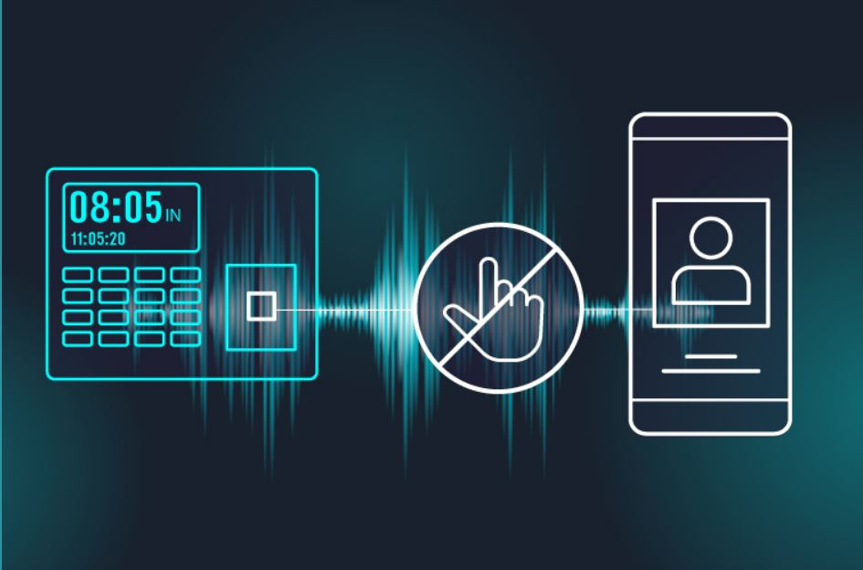
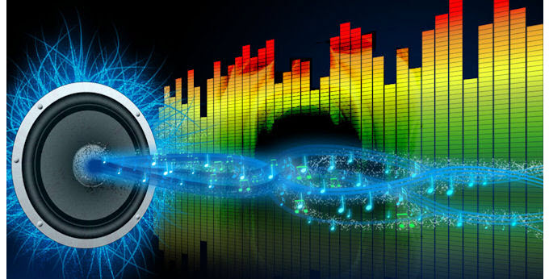

FFT based Authentication System
Abstract
In this post-covid world everything is getting changed so we have to adopt to changes . Biometric based authentication is outdated now and its need of the hour to develop novel systems which can be helpful at corporate offices,malls,labs,colleges where authenticating systems are used .An alternative to biometric fingerprint or keypad pushbuttons .Make accessing places most hygienic while maintaining security with personalized virtual keys on mobile phones. Safe shared no-contact access with ultrasonic keys that are as easy as a voice text message. here we will be making two different kinds of authentication system We built ultrasonic authentication system using our eYFi- mega development board . We also interfaced the same with Google sheets to dynamically update the log in details and time stamps of unique users . We made use on very few components to complete this Authentication system.
This system was tested for reliability,accuracy,dependability and lot of other factors. We have implemented both e-YFi mega based solution as well as Day to day Laptop based solution so we can retrofit this system anywhere within fraction of time . Cloud based support is given as well so that all the details can be monitored form anywhere
Variants of our design
-
e-YFi Mega based demo ( using Phone and ESp32-authenticating node)
-
Python based demo ( using Phone and Laptop-authenticating node)
DEMO OF OUR PROJECT
How Ultrasonic Access Control Works ?
Ultrasonic keys are coded “silent” audio messages that are sent from a mobile phone app to any electronic entrance keypad. As a person holding a mobile phone nears the corresponding electronic entrance requiring the manual handling of a magnetic card, a biometric fingerprint or a push button keypad, the mobile plays an audio (ultrasonic) code that essentially is the virtual key.

Because the message is in the form of sound waves, which are naturally confined within a specific location, the message itself confirms that the phone is right there at the access point. That natural quality, together with our tokenized security technology, transforms the message into a personalized, controlled key. Unlike a password or pass coded number an ultrasonic key is always virtual and can never be copied, lost or stolen; it will simply be deleted and replaced.
Sending Data Over Sound: How and Why?
Demand grows for better IoT connectivity, with the need for the most basic of smart devices to be able to process real-time audio and perform intelligent DSP. One emerging solution is sending data-over-sound. Thus, data-over-sound software works well in a situation where there’s no network access, like rural or RF-restricted areas."
From smartphones and tablets, to industrial equipment and smart-home appliances, hundreds of thousands of smart devices now require different forms of connectivity. The inevitable demand for better connectivity in the IoT era has increased the expectations for even the most basic smart devices to have the capability to process real-time audio and perform intelligent digital signal processing (DSP) on the network's entry point device.
This has ultimately paved the way for a host of innovative market entrants, looking to both challenge and work in tandem with traditional solutions to provide quality data-transmission capabilities.
Data-over-sound is one technology that’s now rapidly emerging as an exciting connectivity option for engineers and developers looking to achieve frictionless interactions between an ever-growing number of connected devices. But how exactly does data-over-sound work let us see about it now .
How Does it Work?
In short, data-over-sound enables the exchange of data between any devices with a pre-existing loudspeaker or microphone through sound waves. Delivered through machine-to-machine communications software, the technology works like an audio QR code, sending data over an acoustic channel to enhance end-user experiences and add value to existing hardware.
In practice, data is encoded into an acoustic signal—a series of audible or inaudible pitches and tones to form a kind of sonic barcode. This is then played into a space and received and demodulated by a listening device. Data is subsequently decoded by the receiving device, or group of devices, and returns the original data. By using a range of audio frequencies, programmers can fit more information into less audio. To filter out noise, we carefully select frequencies and tune our software .
Why Sound?

-
Ultrasonic connectivity solves the major limitations of existing RF-based communication standards . It outstrips RF connectivity by providing:
-
Low price and absolutely No special hardware needed.
- High security – Verifies physical presence in compliance with SCA and enables session verification out of band, preventing man-in-the-middle attacks.
- Total reliability – Always on, and works where WiFi, GSM, GPS, etc. cannot work or are unavailable.
- Improved safety – Zero electromagnetic radiation.
Data-over-sound has a multitude of complementary capabilities when compared to other connectivity technologies. The technology’s position as a pairing-free, one-to-many medium means it mitigates some of the setup and provisioning pain points often associated with traditional alternatives such as Bluetooth and Wi-Fi, presenting an appealing and versatile solution for frictionless data transmission. In general, compared to other technologies, data-over-sound is also able to be used in very wide application areas, taking advantage of existing hardware and without prior setup or configuration.
Doing so, it enables the interconnection of millions of devices in a seamless, scalable, and cost-effective way to enhance end-user experience and drive value without increasing hardware costs. This ability to enhance existing infrastructure has inevitably captured the interest of companies interested in adding wireless connectivity functionality without adding to their bill of materials.
The Benefits of Sending Data over Sound
Embedding and extracting meaning from sound provides a quick, secure, and cost-effective solution that works completely offline. Data-over-sound is now emerging as an ideal medium for simple implementation and reliable connectivity. Some of the most clear affordances of sound include:
Works offline: Sound works peer-to-peer or one-to-many, meaning no additional connections or network dependencies are needed . Thus, data-over-sound software works well in a situation where there’s no network access, like rural or RF-restricted areas. Here every phone or device will have mic and speskers
Utilize existing hardware: The rise of microphones in IoT devices means that the hardware requirements are already met for billions of existing devices of all form factors. Combined with the arrival of zero-power microphones, data-over-sound provides an extremely low power. This will be Eliminating the need for additional hardware saves users both money and resources that can be invested back into the business.
Secure, private data transfer: Because acoustic connection doesn’t require an internet connection and supports industry-standard cryptography, you’ll have peace of mind that any data transferred will not be compromised. No audio, not even audio metadata, is ever stored or sent from a receiving device for processing.
Supports range of platforms: Data-over-sound is compatible with machines and devices of different platforms, form factors, and architectures that can process audio. From smartphones and tablets to toys and games, and even legacy and analog equipment, any device with a microphone and speaker can receive and decode data with the technology.
Seamless integration: Often implementing new software can be resource- and time-intensive. However, data-over-sound can be delivered through software-development kits (SDKs), which provides a fast and easy integration to a host of platform types, making the solution ideal for hobbyist developers and IoT projects.
Scalable: With data-over-sound, there’s no need to reengineer as your application grows. Whether the aim is to enable seamless P2P exchanges or send data from one-to-many, this method of data transfer is completely scalable. Use cases for data-over-sound are therefore wide ranging. They can include IoT devices sending and receiving commands, secure transactions, and un-spoofable receipts to merchants or buyers, as well as sending/receiving credentials (to provision Wi-Fi, for example).
Works in extreme environments: Through a range of frequencies, data-over-sound software is robust to background noise and has been proven to work seamlessly in the most extreme environments. From the streets of Delhi to nuclear power stations, acoustic network connectivity remains universally strong in the toughest environments.
Applications of using sound
Ultrasonic Payments: Facilitating secure pairing for mobile payments and contactless ATM interaction , already SBI yoni has mobile based withdrawal , which will include mobile based passcode as well so if we just go there with our phone then we will get the cash without any physical interaction with the ATM machine . Ultrasonic Authentication: Providing a seamless and secure identification solution a fully developed app that can be easily integrated and used by any third party application .this can replace the present biometric authentication system,rfid etc.
Challenges ahead
we do have some form of challenges and problems which can definitely be solved with relevant methods
Problem 1: Audio Hardware Limitations For our proposed solution, we need to broadcast the identifier (as ultrasonic sound) into an environment. We want this signal to be as strong as possible, but there are limits. An audio system can be overdriven which results in clipping. You’ve heard clipping if you’ve ever turned your speakers all the way up and the sound starts to get grainy.
We see the same problem on the signal detection side. Microphones each have their own characteristic roll off, and will detect audible frequencies with greater ease than ultrasonic frequencies. And since the responsiveness characteristics of microphones vary depending on the frequencies to which they are exposed, we don’t get the same magnitude measure for two different frequencies even if they are played at equal intensity.
Finally, most speakers and microphones are responsive to the frequency range of 20 Hz to 20 kHz which is more than enough to account for the range of human hearing. However, this means that our usable bandwidth of ultrasonic frequencies is small. The number of frequencies we can produce/detect at one time is limited.
Problem 2: Computation on Eyifi-Mega Development board
The longer the amount of recorded audio, the greater precision we can achieve with frequency analysis. However, more recorded audio also requires greater processing time in the analysis phase, which is done on our development board. Many mobile devices simply lack the computational horsepower to simultaneously record audio, store it, and perform frequency analysis.
We continue to tune the system so that we have a fast response time and high precision during the analysis phase. We’ve found the system works best when we use 1024 samples of audio at 44100 samples per-second for each loop in the receiver. A power of two is necessary for the Fast Fourier Transform to function properly. As smartphones get better, we anticipate this being less and less of a problem.
novel idea where we use the sound spectrum to communicate between two devices and authenticate one's identity . We are proposing a protocol for data connectivity and authentication over sound waves. This will also serve us as out-of-band M2M connectivity. We have encompassed a protocol which uniquely harnesses the power of Near ultrasound sound (17khz -20khz) to verify physical presence and authentication unprecedented precision. It is now possible to deliver a digital-like experience in the physical world – opening new opportunities for IoT, DSPs .